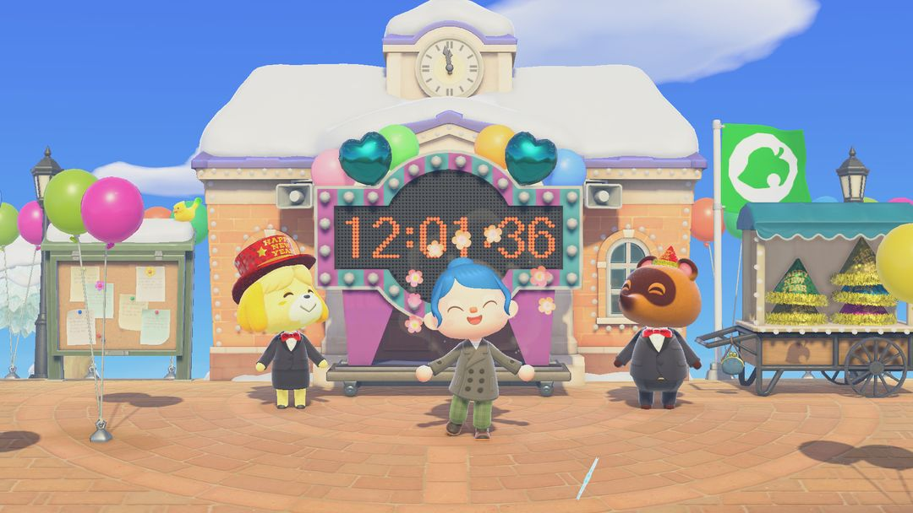
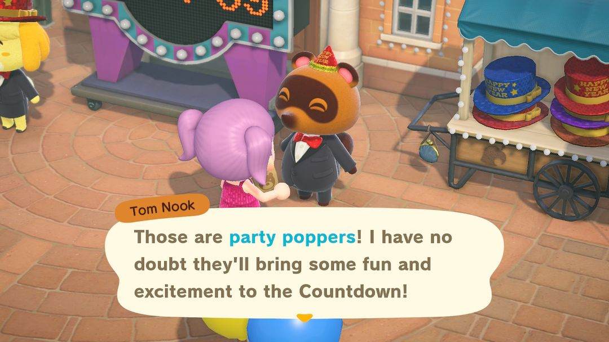
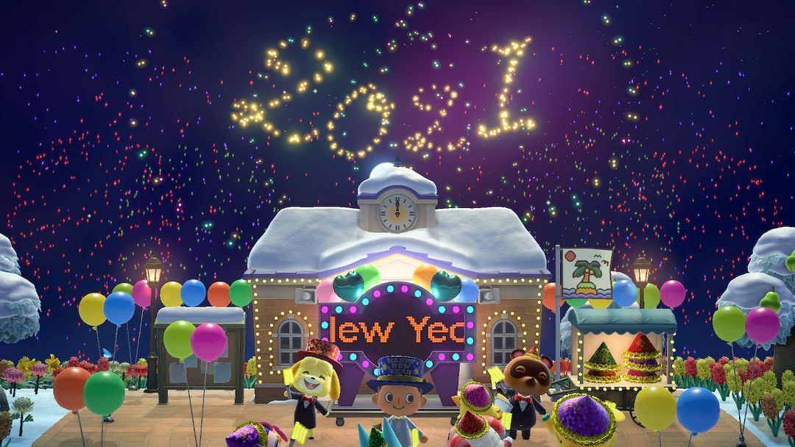
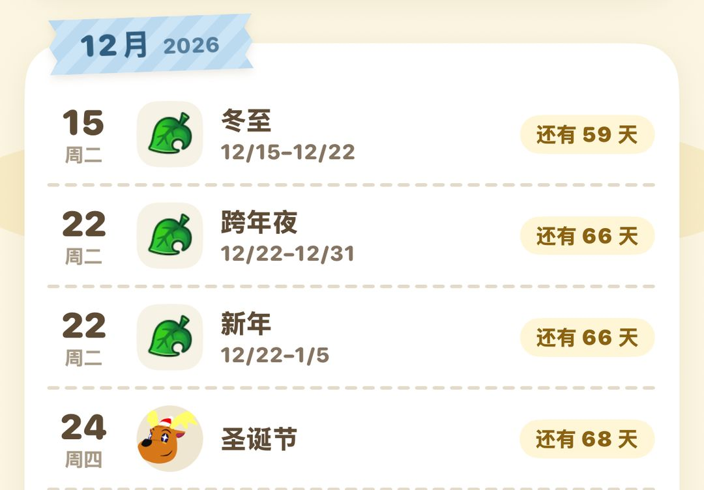

New Year's countdown and New Year's Day: head to the plaza on December 31
Light sticks from Isabelle, party poppers from Tom Nook, and New Year's items on Nook Shopping around the holiday
Every December 31, your island holds a New Year's countdown. Resident Services closes for the day, and Isabelle and Tom Nook move the party out to the plaza in front. At midnight, fireworks light up the whole island, and your villagers sing and dance in the plaza until 2 AM. It's the same day in both hemispheres.
There's not much to prepare: stop by the plaza during the day to pick up a light stick and party poppers from Isabelle and Tom Nook, and leave a few free pocket slots. Also, starting December 22, Nook Shopping offers a batch of New Year's furniture and holiday food. Some of it is only sold until the 31st, so if you want it, don't wait until after New Year's Day.
01December 31
The countdown date is fixed: December 31 every year, the same in both hemispheres. Once the clock strikes midnight, it's New Year's Day.
Resident Services is closed that day, and Isabelle and Tom Nook spend the whole day in the plaza out front. A countdown board goes up, along with string lights and balloons — it really looks like party time. You can drop by and pick up your items anytime during the day, but things don't really get going until after 11 PM.

December 31 during the day: a countdown board stands outside Resident Services, with Tom Nook's stall on the right (Image: Nookipedia)
02Pick up your items in the plaza during the day
Talk to Isabelle and she'll hand you a light stick to wave along with everyone during the countdown.
Tom Nook, right next to her, gives you 5 party poppers to set off around midnight. He also runs a little stall selling New Year's hats for 500 Bells each, in your choice of color; some years the stall sells New Year's silk hats instead. If the free party poppers aren't enough, you can buy more at the stall in sets of 5.
If you buy a New Year's hat, wear it while chatting with villagers — sometimes they'll put on their own hats too.
If your pockets are full, they can't give you anything, so free up a few slots before you go. If you forget during the day, no worries — talk to them after midnight and they'll still give you a light stick and party poppers.

Tom Nook hands you party poppers; the stall behind him sells New Year's hats (Image: Nookipedia)
03From 11 PM to 2 AM
Once it's past 11 PM, the mood on the island builds step by step. Here's roughly how it goes:
| Time | What happens |
| 11 PM | The hourly music switches to special New Year's Eve music |
| 11:30 PM | Villagers start heading to the plaza |
| 11:55 PM | Isabelle, Tom Nook, and the villagers take out their light sticks |
| Final minute | The countdown board chimes every second, louder for the last 10 seconds |
| Midnight | The New Year's cutscene plays, the island tune rings out, and fireworks go off |
| Midnight–2 AM | Nonstop fireworks while villagers sing and dance in the plaza |
| After 2 AM | The music quiets down and villagers stop dancing, but Isabelle and Tom Nook stick around |
Around 11:55 PM is the perfect time to arrive at the plaza, just in time to raise your light stick with everyone and listen to the board tick down second by second.
The midnight cutscene plays no matter where you are on the island — even if you're out on a boat tour with Kapp'n, you can still see the fireworks over your island. The first time you ring in the New Year in the game, you'll unlock an achievement worth 1,000 Nook Miles the moment the countdown hits zero.
NoteAround midnight, steer clear of tarantulas, mosquitoes, and anything else that can interrupt you. If something else happens to interrupt you right then, you might miss the midnight cutscene.

The plaza after midnight, with fireworks until 2 AM (2021 screenshot) (Image: Nookipedia)
After the cutscene, the fireworks keep going until 2 AM while your villagers sing and dance in the plaza. After 2 AM the music quiets down and the villagers take a break, leaving just Isabelle and Tom Nook in the plaza.
TipAfter midnight, visit your villagers' homes — the ones staying in are singing and dancing inside too.
04New Year's Day
New Year's music plays all day on January 1, and Isabelle wishes the whole island a happy New Year in her morning announcement. Check the Nook Stop at Resident Services that day to claim 500 Nook Miles — don't forget.
The light is different on New Year's Day too: the sun sits low in the morning and evening, casting long shadows. If you want some New Year's photos, head to the beach at those times.
05New Year's items on Nook Shopping
New Year's items hit Nook Shopping starting December 22, and everyone can buy items from every region, no matter where you're playing. Anything you buy is added to your catalog, but you can only reorder it during the season — miss it, and you'll have to wait until next year.
These items leave in two waves: the New Year's Eve foods are only sold until December 31, while the New Year's decorations and food stay on sale until January 5.
| Item | Price (Bells) | Sold until |
| New Year's noodles | 1,300 | December 31 |
| berliner, twelve-grape dish | 1,200 each | December 31 |
| Olivier salad, sparkling cider | 1,000 each | December 31 |
| kadomatsu | 2,580 | January 5 |
| New Year's shimekazari | 2,000 | January 5 |
| kagamimochi | 1,800 | January 5 |
| osechi | 5,000 | January 5 |
| otoshidama envelope | 500 | January 5 |
| That year's zodiac figurine | 1,600 | January 5 |
| Yut Nori | 1,300 | January 5 |
Nanakusa gayu is also sold on its own from January 5 to 7, at 1,200 Bells each.
TipOnly that year's zodiac figurine is sold each year. To collect all 12, you'll have to buy them one year at a time or trade with friends.

The Event Calendar in Nook Circle: both the New Year's Eve and New Year's batches go on sale December 22
06Version changes
Starting with Ver. 2.0, New Year's items go on sale earlier, on December 22 (previously the 26th). The osechi and otoshidama envelope in the table were also added in 2.0.
Nook Circle · Search "Nook Circle" on the App Store